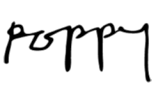
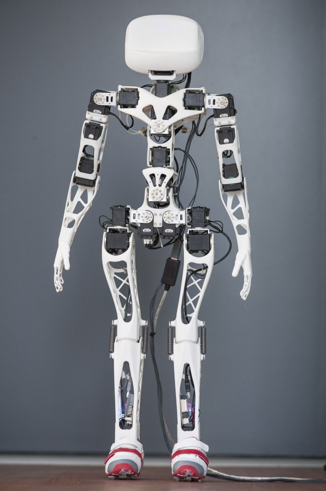
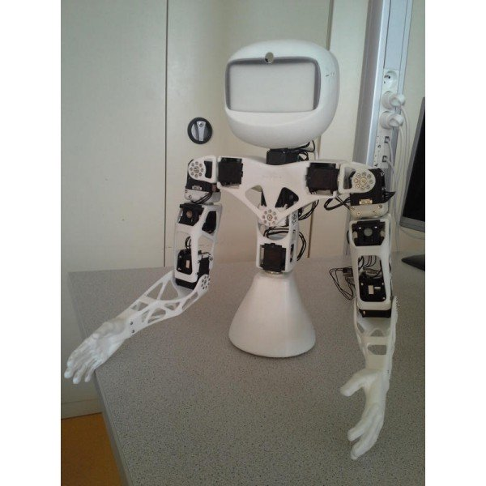

Introducing the Poppy project¶

Poppy is an open-source platform for the creation, use and sharing of interactive 3D printed robots. It gathers an interdisciplinary community of beginners and experts, scientists, educators, developers and artists, that all share a vision: robots are powerful tools to learn and be creative.
The Poppy community develops robotic creations that are easy to build, customise, deploy, and share. We promote open-source by sharing hardware, software, and web tools.
#####The Poppy project has been originally released by the INRIA Flowers.
This project aims to have a robotic open-source and open-hardware kit, for the conception and programming of robotic creatures. This kit also contains an integrated software environment, easily installable, dedicated to the use of the robot, and associated with a web platform enabling the community to share experiences and to contribute to the improvement of the platform.
Recently, Poppy has been used as a “robotic tool”. It can be a great educational and motivational tool to learn engineering and digital sciences.
The Poppy project also consists of a very active and diverse community. People of different horizons collaborate to improve the project ; they add features to the core libraries, release advanced behaviors, create pedagogical content or even new robots. To facilitate these exchanges two supports are available:
- the forum “poppy-project” for help, dialogue and to share ideas
- github to deposit your contributions
All sources of the Poppy project (software and hardware) are available on our Github.
The Poppy Creatures¶
Poppy creatures are open-source and open-hardware/software robots, available to download and modify (Creative Commons License, BY-SA). They are created with the same characteristics.
All Poppy creatures are :
- based on a Python library, Pypot, allowing to control Dynamixel servomotors in an easy way,
- made from pieces of printable 3D and low cost engines,
- have a simulator available (based on vrep),
- have a visual programming language (Snap! a variation of Scratch),
- and textual languages (python, Matlab, Processing etc.).
Poppy robots (real or in the free simulator) are programmable through a “Rest API”, which enables the controller with any programming language through simple http requests.
They can be used as it is, or hacked to explore the shape of novel legs, arms, hands...
You can get a full Poppy Creature robot from one of Poppy’s official resellers:
- Génération Robots, or you can get all the parts yourself.
##There are 3 types of Poppy creatures :
###Poppy Humanoid
It’s a 25-degree of freedom humanoid robot with a fully actuated torso. Used for education, research (walk, human-robot interactions) or art (dance, performances). From a single arm to the complete humanoid, this platform is actively used in labs, engineering schools, FabLabs, and artistic projects.
You can get all the parts yourself following the Bill of Material. The 3D models for the parts can be found here.
After assembling your robot, try the discover quickstart, then have a look at the poppy_humanoid library.

###Poppy Torso It’s an upper part of Poppy Humanoid (13 degrees of freedom). Poppy Torso is more affordable than the full kit (Poppy Humanoid), which makes it especially suitable for uses in an educational, associative and makers context. Poppy Torso is an ideal medium to learn science, technology, engineering and mathematics (STEM).
You can get all the parts yourself following the Bill of Material. The 3D models for the parts can be found here (they are the same as Poppy Humanoid, simply remove the legs and add the support).
After assembling your robot, try the discover quickstart, then have a look at the poppy_torso library.

###Poppy Ergo Jr
The Poppy Ergo Jr robot is a small and low cost 6-degree-of-freedom robot arm. It is made of 6 cheap motors (XL-320 Dynamixel servos) with 3D-printed parts (based on OpenScad and assembled with OLLO rivets). At the end of his arm, you can choose among several ends: a lamp, a gripper hand,...
This robot is the ‘little brother’ of the ergo robots used in ‘ the Ergo-robot experiment https://www.poppy-project.org/project/mathematics-a-beautiful-elsewhere/_.
Poppy Ergo Jr is still in development. However, you can already get the parts and motors ; during the next development phases we will probably add new pieces and not modify the existing ones.
The list of parts to print is here and the 3D files there
You need 6 Dynamixel XL-320 (for example from here ), a USB2AX to connect them to a computer and a small adaptation board.
After assembling your robot, try the discover quickstart, then have a look at the poppy_ergo_jr library.